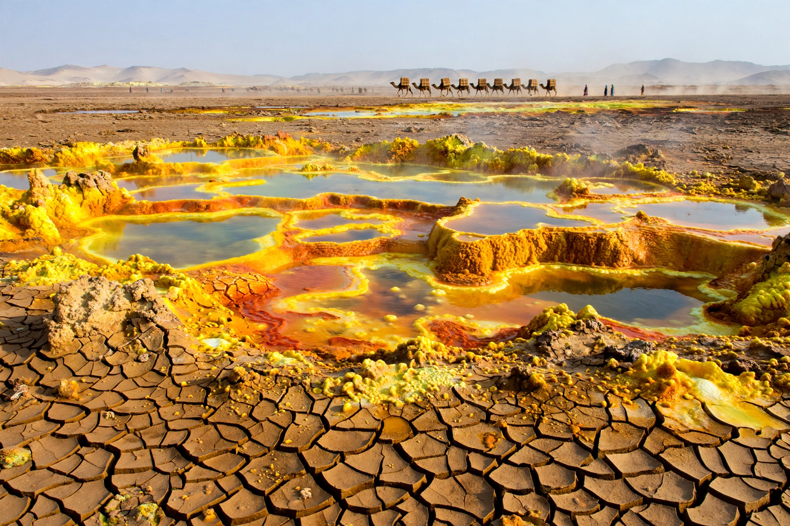

| Afar Region | |
|---|---|
 | |
| Country | Ethiopia |
| Capital | Semera |
| Area | c. 72,000 km² |
| Population | c. 2 million (est.) |
| Principal people | Afar |
The Afar Region (Afar: Qafar Rakaakayak) is one of the regional states of Ethiopia, in the north-east of the country, bordering Eritrea and Djibouti. It is the homeland of the Afar people, traditionally nomadic pastoralists, and its capital is the new town of Semera on the Awash–Assab highway.
The region covers much of the Afar Triangle, the northern part of the Great Rift Valley where the Earth's crust is actively splitting apart. It includes the Danakil Depression, one of the hottest and lowest places on Earth — dropping to about 125 m below sea level — with active volcanoes such as Erta Ale, colourful sulfur springs at Dallol, and the salt lakes Karum and Bakhle, from which salt is still cut and transported by camel caravan. The Awash River ends its course in the region's lakes rather than reaching the sea.
The Middle Awash valley and Hadar in Afar are among the most important fossil sites in the world for early human evolution. Here were found "Lucy" (Australopithecus afarensis, discovered 1974), the older Ardipithecus remains, and some of the earliest known stone tools, making the region central to understanding human origins.
Livestock herding dominates, alongside salt extraction, cotton and sugar cultivation along the Awash, and — increasingly — geothermal energy and potash prospects in the Danakil. The region was affected by fighting in the northern Ethiopia conflict of 2020–22.